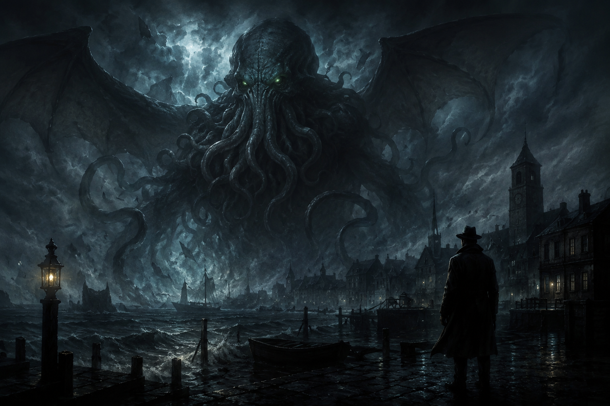
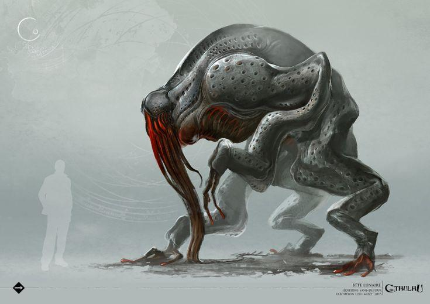
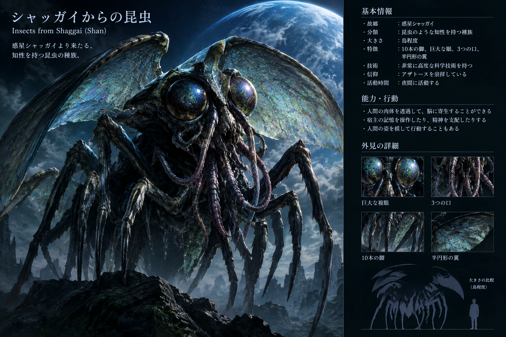
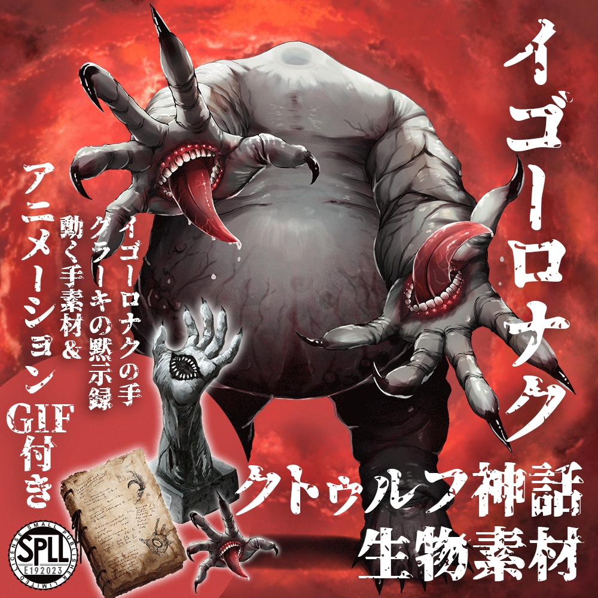
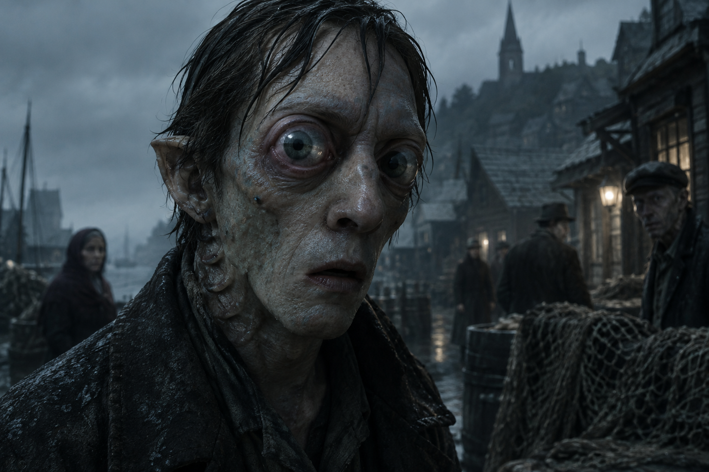
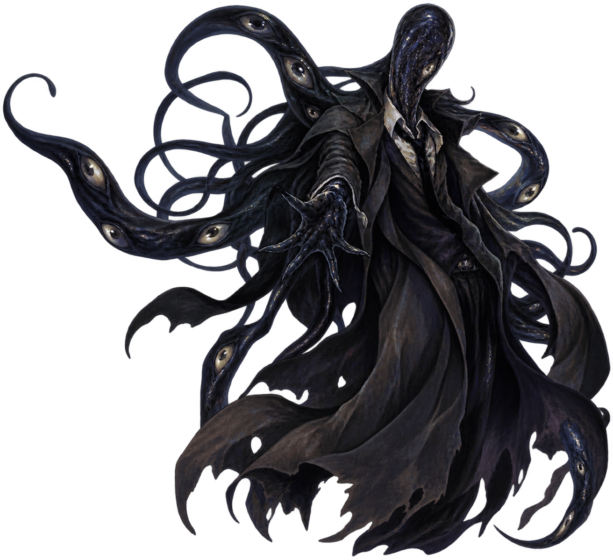
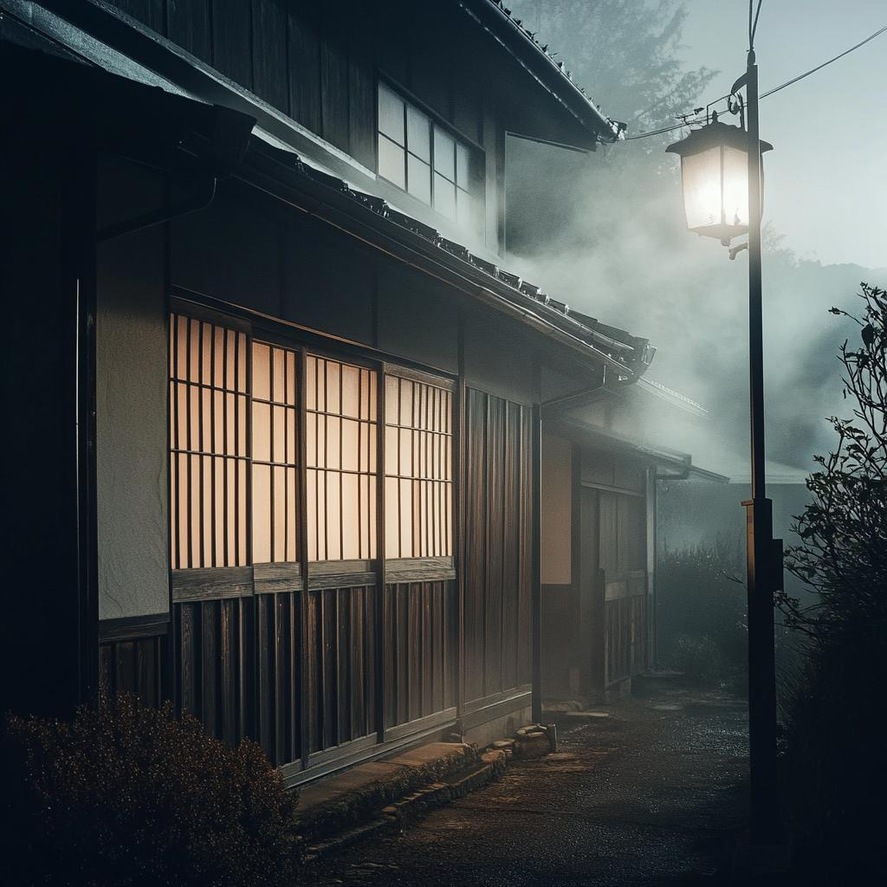
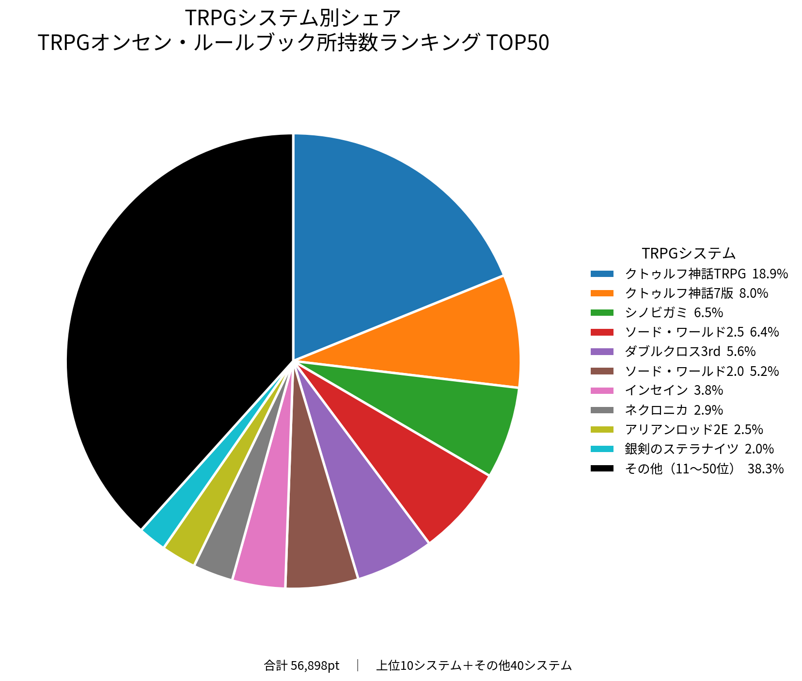
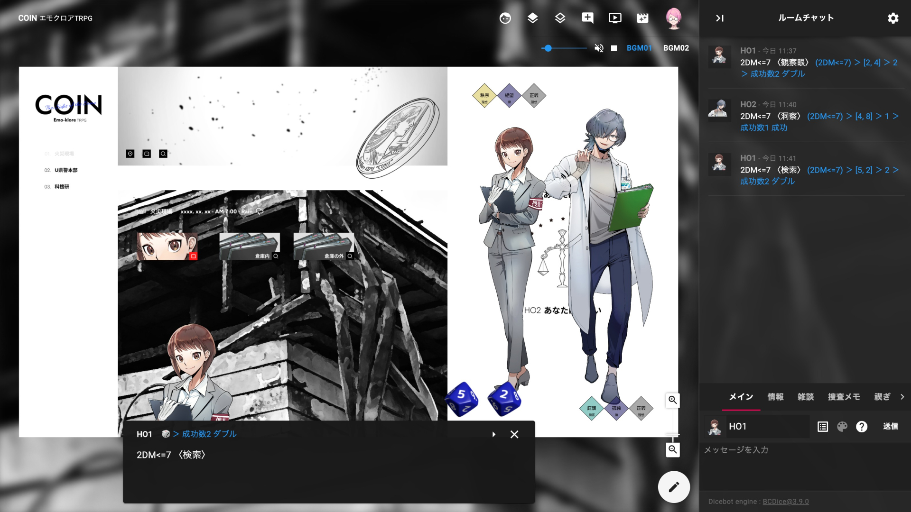

クトゥルフ神話TRPG
悍ましきコズミックホラーの世界にようこそ

クトゥルフ神話とは
20世紀の作家ラヴクラフトとその友人たちで作り上げられた架空の神話
もし神様が良い存在ではなく邪悪な宇宙生物であったらという世界観の作品
クトゥルフ神話の魅力
過剰な形象詞で彩られた醜悪な怪物

ムーンビースト
月に住むとされる怪物
邪教を崇拝している
拷問が好き

シャッガイからの昆虫
シャッガイという惑星を拠点にする虫
邪教を崇拝している
拷問が好き

イゴーロナク
人間の堕落を目的とする神様の1人
本を読むと会いに来てくれる
エッチなことと拷問が好き
恐ろしく邪悪な神話の神々とカルトに支配された世界
クトゥルフ
かつて地球を支配していた神様。今は深海で眠っている
クトゥルフ神話という名前だが実はクトゥルフは最高神格ではない
小説によっては漁船にぶつかっただけで眠りについたり核を落とされても復活したりでタフネスにばらつきがある。

ダゴン秘密教団
インスマスという人種で構成されたクトゥルフ信仰の集まり
インスマスは魚人と人間のハーフであり魚のような顔が特徴。
恐るべき執念とコネクションで邪魔者を始末してくる凄いやつ

ニャルラトホテプ
ぶっちゃけ単体のクリーチャーとしてみるとクトゥルフよりこっちのが有名な神
女の子にされたり機械のウイルスになったり何かと多芸で便利に使われがち
クトゥルフ界ののトリックスター
ファンタジーTRPGと違い現実世界がベースなので初心者でも入りやすい
舞台になるのは主に現実世界
現代の日本など、私たちの暮らす世界に近い環境が舞台。
魔法や異世界の知識がなくても、普段の生活で得た知識や経験を活かして行動できます。
自分の発想で謎を解く
怪しい場所を調べたり、人物に聞き込みをしたり、手に入れた情報を整理したり。
決められた戦い方だけでなく、自分なりの方法で事件の真相に迫れます。

日常が恐怖に変わる
普通の街や学校、身近な人々の裏側に、恐ろしい怪物や理解できない超常現象が潜んでいるかもしれません。
見慣れた世界が少しずつ恐怖に侵食されていく体験を楽しめます。
日本国内の圧倒的な人気からくるプレイヤー人口の多さで遊びやすい！

オンライン通販の得点を元にした円グラフ
クトゥルフだけで焼く26%のシェアがあり通話アプリを使った交流も活発
ルールブックをまとめた公式アプリ
ルールブックをまとめて索引機能が付いたアプリが存在する
サブスク形式で利用可能でとても手軽

豊富なウェブアプリ
セッションを便利に豊かにしてくれる多くのウェブアプリが開発されています
代表例はキャラクターシートを纏めるいあキャラやオンラインセッションに演出が追加できるココフォリアなど
総括
クトゥルフ神話TRPGは、恐ろしい怪物や人知を超えた存在が登場する、コズミックホラーを題材としたTRPGです。
しかし、その魅力は恐怖だけではありません。
現実世界に近い環境を舞台に、自分の知識や発想を活かして謎を解き明かし、仲間と協力しながら物語を進めることができます。
特別なファンタジーの知識がなくても始めやすく、初心者でも物語の世界に入り込みやすいのが特徴です。
また、プレイヤーの選択や行動によって物語の展開が変化するため、同じシナリオでも遊ぶメンバーによって異なる体験が生まれます。
恐怖に立ち向かうのか、危険から逃げるのか、それとも真相を追い求めるのか。自分たちの判断が物語を形作っていきます。
恐怖と謎解き、自由な発想、そして仲間と物語を作り上げる楽しさ。
これらを同時に味わえることこそ、クトゥルフ神話TRPGの大きな魅力です。
ホラーが好きな人はもちろん、推理や物語体験に興味がある人にもおすすめできるTRPGです。
ぜひ、自分自身が探索者となり、日常の裏側に潜む未知の恐怖を体験してみてください。